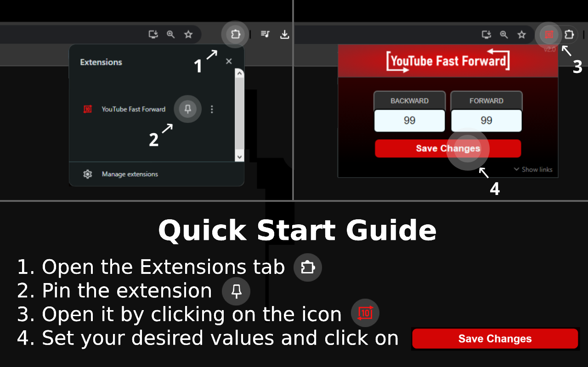

We're thrilled to announce the release of YouTube Fast Forward version 2.0, packed with exciting new features and important fixes to enhance your video watching experience on YouTube.
What's New:
-
Customizable Buttons: Say goodbye to static skipping intervals! With version 2.0, you can now customize the skip time intervals for forward and backward buttons according to your preferences. Set the perfect skipping duration that fits your viewing habits.
-
Improved Reliability: We've fixed the issue where buttons occasionally failed to load, ensuring a seamless experience every time you watch a video. No more manual refreshes needed - the buttons will be right there when you need them.
Note:
Your customized skip time intervals are now saved instantly and persist across all tabs. However, please remember that clearing your browser cache or cookies will reset these settings.
Skip intervals are adjustable in seconds, with a maximum limit of 99 seconds.
The popup works only on YouTube pages.
View the new update on the Chrome Web Store.
Report issues/bugs to extensions@repuddle.com
Happy skipping!
Preslav
Founder of repuddle